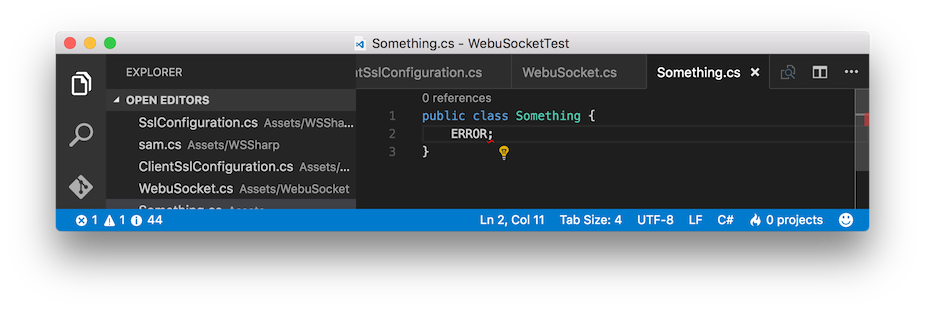
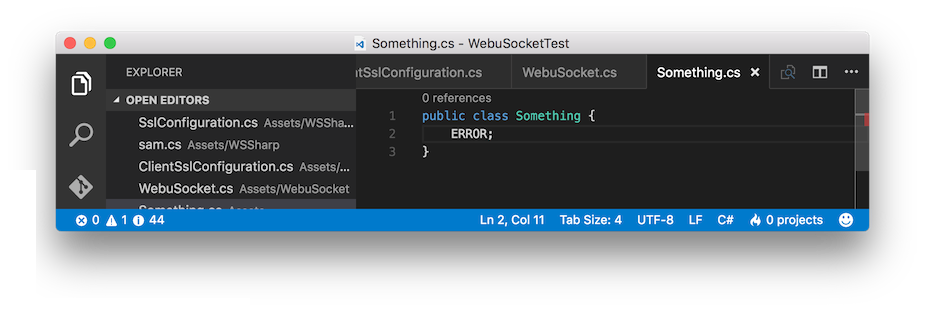

過去のバージョンのVSCodeをDLする
概要
1.6.x系になってから、どうやらコンパイルエラーが3秒で消えるようになってたらしい。
Unityのコードをひたすらゴリゴリ書いてたので気づかなかったんだけど、1.6.1が配信されだしてから異変に気づいた。
症状
コンパイルエラーがあるじゃろ

3秒まつじゃろ

エラー表示が消える
エラー件数も0件になる
コエーー
(この画像は今手元に唯一残ってる1.5.0の画像を編集して再現したでっちあげなんで、もしかしたら1.6.0とは細部デザインが違うかも)
対処法
古いのDLしよ？ サイズも50M程度だし。
下記からDLできた。XとかYに欲しいバージョンの数字を入れよう。
https://vscode-update.azurewebsites.net/1.X.Y/darwin/stable
っていいつつまあ最新使わないのは本当に色んな意味でよくないので、1.6.2が出たら起こして。